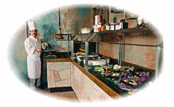

Beyond this stone gate waits high adventure...
Up for some good
RuneQuest? A couple of good cooking recipies? Or how about a hobby
of mine,
I am restoring an old Edsel! Just click your picture choice below.
| Cooking with the Ouija |
The Ouija delves into RuneQuest |
Restoring an old car
with the Ouija Yes an Edsel! |
|
 |
 |
 |